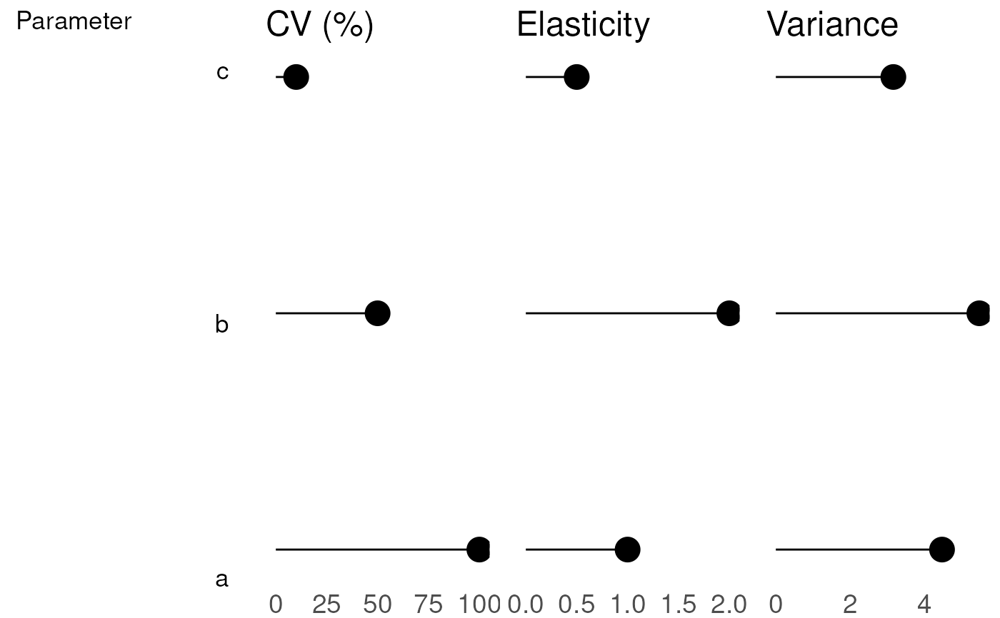

Plots variance decomposition tryptich
Usage
plot_variance_decomposition(
plot.inputs,
fontsize = list(title = 18, axis = 14)
)
Arguments
- plot.inputs
Output from a sensitivity analysis. Output must be of the form
given by sensitivity.results$variance.decomposition.output in model output
- fontsize
list specifying the font size of the titles and axes of the graph
Author
David LeBauer, Carl Davidson
Examples
x <- list(trait.labels = c('a', 'b', 'c'),
coef.vars = c(a=1,b=0.5, c=0.1),
elasticities = c(a=1,b=2,c=0.5),
variances = c(a = 20, b=30, c = 10))
do.call(gridExtra::grid.arrange, c(plot_variance_decomposition(x), ncol = 4))
